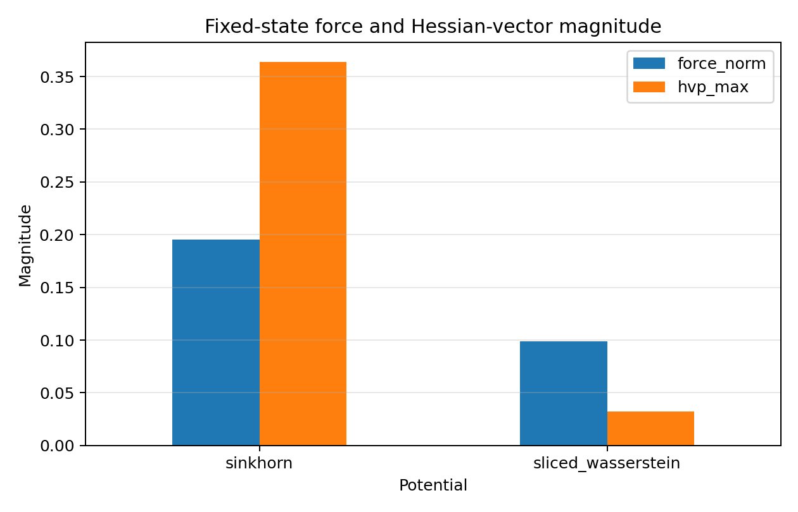
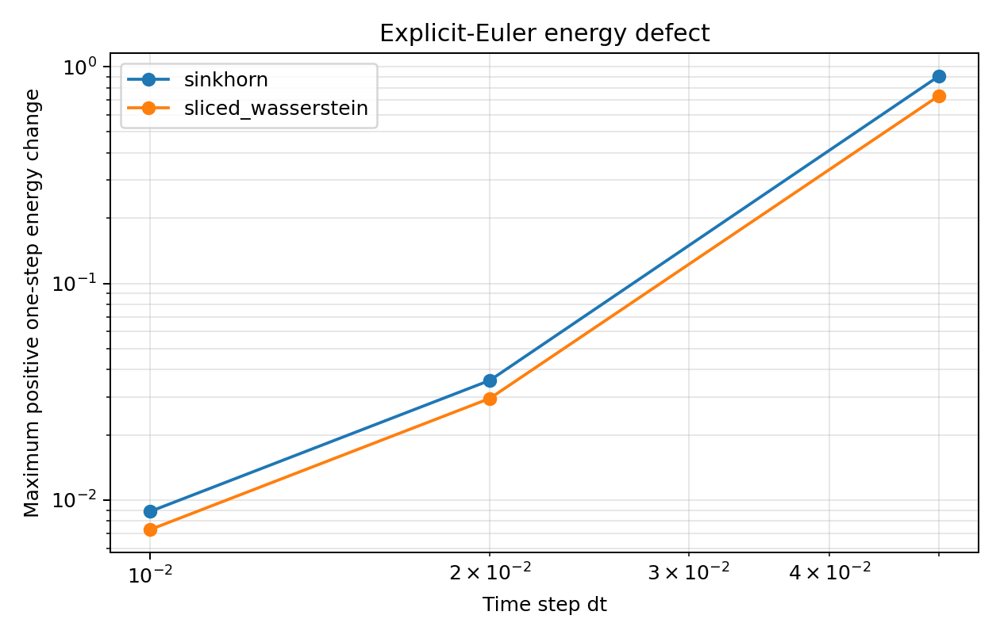
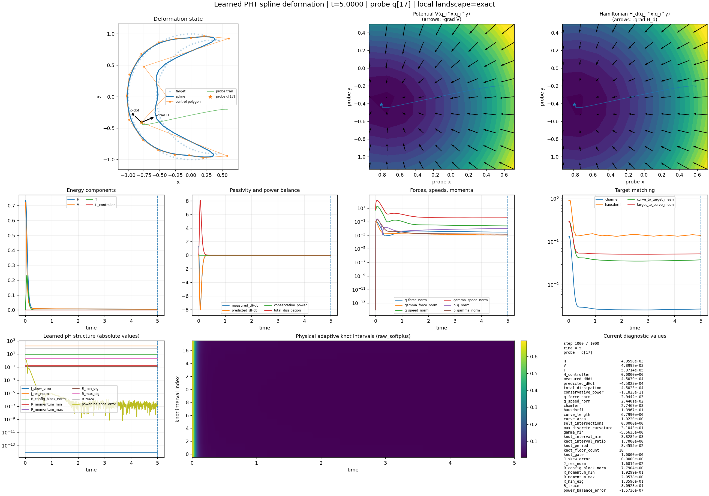

Control geometry
Control vertices carry the finite-dimensional shape coordinates from which the periodic spline is evaluated.
Circle → crescent case study
A structured deformation model in which target matching, spline representation, energy flow, and geometric admissibility are treated as distinct—and testable—parts of the problem.
CVC Lab, The University of Texas at Austin · SIAM MDS26 companion project

Abstract
The source is a periodic B-spline with adaptive knot intervals; the target is an observed crescent boundary. Both are sampled as empirical measures, and their discrepancy defines a potential on spline configuration space. Port-Hamiltonian structure then separates energy-preserving interconnection from dissipation.
The central audit question is stronger than “does the final curve look like a crescent?” A trustworthy trajectory should also retain regularity, avoid self-intersection, keep knot intervals positive, and respect an energy law at the numerical—not only continuous—level.
01 · Model
Control vertices carry the finite-dimensional shape coordinates from which the periodic spline is evaluated.
Knot logits redistribute a fixed period. This changes local resolution and continuity; it is not a topological operation.
Sinkhorn OT, sliced W₂, and related discrepancies define different pullback forces and local curvature.
02 · Dynamics
With state x = (z,p), the implemented plant uses a learned skew interconnection Jθ and positive-semidefinite dissipation Rθ, together with controller damping Rctrl.
Here Hd = T(p) + V(q,γ;Y). This is the continuous result in memo Eqs. (45)–(58).
03 · Evidence


| Tested path | dt | First crossing | Max one-step ΔH | Final H |
|---|---|---|---|---|
| Canonical · Sinkhorn | 0.05 | None | −2.033×10−4 | 0.7595 |
| Learned PHT · Sinkhorn | 0.05 | t = 0.20 | +0.906 | 15.217 |
| Canonical · sliced W₂ | 0.01 | None | −6.44×10−6 | 0.6583 |
| Learned PHT · sliced W₂ | 0.01 | t = 0.22 | +7.31×10−3 | 0.02044 |
Interpretation. In these recorded tests, the canonical semi-implicit paths remained intersection-free and energy-decreasing. The learned explicit-Euler paths crossed early, even when the final energy was small. Low loss therefore does not certify an embedded curve.
04 · Case study

05 · Next
The current code monitors intersections but does not impose Qemb as a hard invariant. Add support-aware separation barriers and midpoint acceptance tests.
Replace or safeguard explicit Euler with backtracking or a discrete-gradient method carrying a stepwise dissipation certificate.
Separate the softmax gauge direction and SE(2) pose before combining Souriau and measurement information metrics.
The present Transformer receives one flattened token and therefore behaves like a dense network. Tokenize control points, knots, or samples to create meaningful attention.
Takeaway
Target matching chooses where the curve should go. Structure and numerical auditing determine whether the path is admissible.
The project already provides a strong diagnostic framework: adaptive spline coordinates, measure-space potentials, structured pH fields, gradient checks, and artifact-level audits. The results also identify the precise next step—carry the continuous geometric and energetic constraints into the discrete rollout.
@inproceedings{gokhale2026information,
title = {An Information-Geometric Port-Hamiltonian Framework for
Operator-Constrained Inverse Problems},
author = {Gokhale, Aaroh and Bajaj, Chandrajit L.},
booktitle = {Proceedings of the SIAM Conference on Mathematics of Data
Science (MDS26)},
year = {2026},
publisher = {SIAM}
}